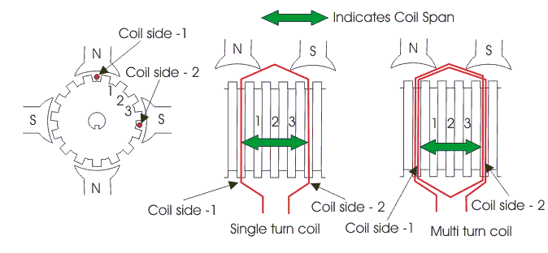
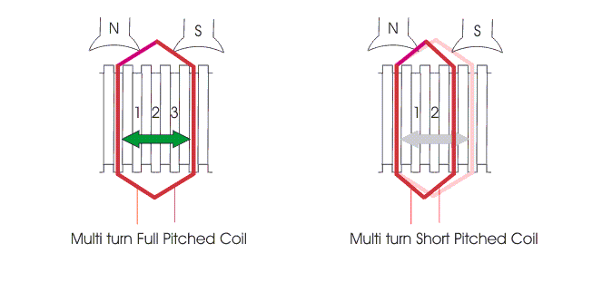
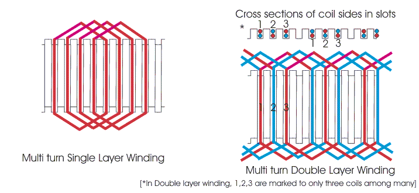

Definition of Pole Pitch
Coil Span or Coil Pitch
Definition of Coil Span
Pitch of Armature Winding
Back Pitch (Yb)
Front Pitch (Yf)
Resultant Pitch (Y)
Commutator Pitch
Single Layer Armature Winding
Two Layer Armature Winding
Now we are going to discuss about armature winding in details. Before going through this section, we should understand some basic terms related to armature winding of dc generator.
Pole Pitch
Definition of Pole Pitch
The pole pitch is defined as peripheral distance between center of two adjacent poles in dc machine. This distance is measured in term of armature slots or armature conductor come between two adjacent pole centers.
This is naturally equal to the total number of armature slots divided by number of poles in the machine.
If there are 96 slots on the armature periphery and 4 numbers of poles in the machine, the numbers of armature slots come between two adjacent poles centers would be 96/4 = 24. Hence, the pole pitch of that dc machine would be 24.
As it is seen that, pole pitch is equal to total numbers of armature slots divided by total numbers of poles, this can alternatively referred as armature slots per pole.
Coil Span or Coil Pitch
Coil of dc machine is made up of one turn or multi turns of the conductor. If the coil is made up of single turn or single loop of conductor, it is called single turn coil. If the coil is made up of more than one turn of conductor, it is referred as multi turn coil. A single turn coil will have one conductor per side of the coil whereas in multi turns coil, there will be multiple conductors per side of the coil. Whatever may be the number of conductors per side of the coil, each coil side is placed inside one armature slot only. That means all conductors of one side of a particular coil must be placed in one single slot only. Similarly, all conductors of other side of the coil are placed in another single armature slot.
Definition of Coil Span
Coil span is defined as peripheral distance between two sides of a coil, measured in terms of number of armature slots between them. That means, after placing one side of the coil in a particular slot, after how many conjugative slots, the other side of the same coil is placed on the armature. This number is known as coil span.

If the coil span is equal to the pole pitch, then the armature winding is said to be full - pitched. At this situation, two opposite sides of the coil lie under two opposite poles. Hence emf induced in one side of the coil will be in 180° phase shift with emf induced in the other side of the coil. Thus, total terminal voltage of the coil will be nothing but the direct arithmetic sum of these two emfs.
If the coil span is less than the pole pitch, then the winding is referred as fractional pitched. In this coil, there will be a phase difference between induced emfs in two sides, less than 180°. Hence resultant terminal voltage of the coil is vector sum of these two emfs and it is less than that of full-pitched coil.

In practice, coil pitch (or Span) as low as eight tenth of a Pole Pitch, is employed without much serious reduction in emf. Fractional pitched windings are purposely used to effect substantial saving in copper of the end connection and for improving commutation.
Pitch of Armature Winding
Back Pitch (Yb)
A coil advances on the back of the armature. This advancement is measured in terms of armature conductors and is called back pitch. It is equal to the number difference of the conductor connected to a given segment of the commutator.
Front Pitch (Yf)
The number of armature conductors or elements spanned by a coil on the front is called front pitch.
Alternatively, the front pitch may be defined as the distance between the second conductor of the next coil which are connected together at the front i.e. commutator end of the armature. In other words, it is the number difference of the conductors connected together at the back end of the armature. Both front and back pitches for lap and wave windings are shown in the figure below.
Resultant Pitch (Y)
It is the distance between the beginning of one coil and the beginning of the next coil to which it is connected.
As a matter of precautions, it should be kept in mind that all these pitches, though normally stated in terms of armature conductors, are also times of armature slots or commutator bars.
Commutator Pitch
Commutator pitch is defined as the distance between two commutator segments which two ends of same armature coil are connected. Commutator pitch is measured in terms of commutator bars or segment.
Single Layer Armature Winding
Armature coil sides are placed in the armature slots in different manner. In some arrangement, each slot is occupied by one side of an armature coil. In other words one coil sides is placed in each armature slot. This arrangement is referred as single layer winding.

Two Layer Armature Winding
In other types of armature Winding, arrangement every armature slot is occupied by two coil sides, one on upper half and other on lower half of the slot. The coils in two layers winding are so placed, that if one side is placed on upper half of the slot then other side is placed on the lower half of some other slot at a distance of one coil pitch away.
 by
by {kind=link}
{kind=link}